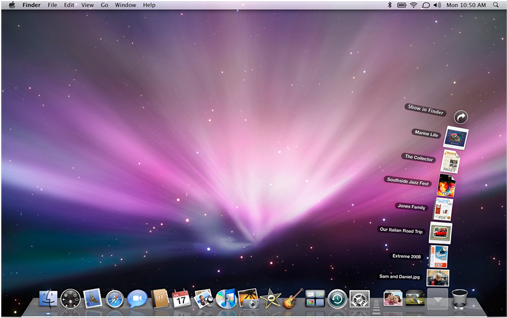
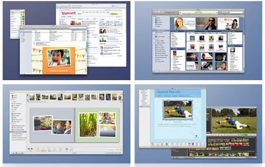

Stacks

Stacks are Dock items that gives you fast access to a
folder of files. When you click a stack, the files within spring
from the Dock in a fan or a grid, depending on the number of items
(or the preference you set). Leopard starts you off with two
premade stacks: one for downloads and the other for documents.
Cover Flow

Cover Flow lets you flip through your documents as easily
as you flip through album art in iTunes. Cover Flow displays each
file as a large preview of its first page, and you can click
through multipage documents or play movies. Now you can actually
see your files in the Finder - not just as icons, but as they
really look.
Quick Look

Quick Look works with nearly every file on your system,
including images, text files, PDF documents and movies. Just tap
the Space bar to see a file in Quick Look, or click the Quick Look
icon in the Finder window (if it's not there already, add it by
selecting Customize Toolbar from the View menu in the Finder).
Time Machine

Time Machine backs up your system files, applications,
accounts, preferences, music, photos, movies, and documents. But
what makes Time Machine different from other backup applications
is that it not only keeps a spare copy of every file, it remembers
how your system looked on a given day.
Mail Stationery

Mail Stationery features 30 professionally designed
templates that make a virtual keepsake out of every email you
send. From invitations to birthday greetings, stationery templates
feature coordinated layouts, fonts, colors, and drag-and-drop
photo placement from your iPhoto library - everything to help you
get your point across.
Spaces

Spaces lets you group your application windows and banish
clutter completely. Leopard gives you a space for everything and
makes it easy to switch between your spaces. Start by simply
clicking the Spaces icon in the Dock.